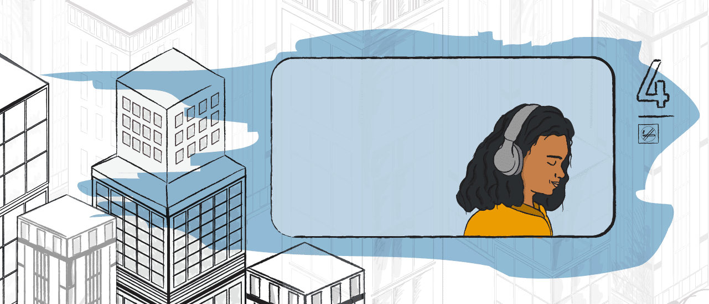

신종 코로나 바이러서 감염증(코로나 19)도 진정되는 날이 올것이다. 종식될 수도 있다.하지만 우리의 삶이 코로나 19 이전으로 돌아갈 수 있을지는 모르겠다. 코로나 19 사태로 건축가들은 우리가 사는건물에 대해 다시 생각하고 있다. 미래의 모습은 어떨까? 밑으로 스크롤 해보자.


레일라를 소개한다.
2025년,레일라는 주 4회 집에서 일한다.재택근무가 일상이
된건 2020년 봉쇄조치 이후부터이다.
출근하는 날이면 ,레일라는 오전 6시30분에 집을 나선다.
오전 7시,회사에 도착한 레일라.출근 인원을 분산시키기 위해
근무자마다 출근 시간이 조금씩 다르다.
출근날은 주로 회의가 많다.다른 업무는 굳이 회사에서 하지
않아도 할 수 있기 때문이다.
레일라 회사의 사무실은 여러 회사가 입주한 큰 건물 안에 있었
다.지금은 사무실 규모를 줄여 작은 건물을 단독으로 사용하고
있다.
회사 건물 1층에는 열 스캐너가 자리잡고 있다.36.5도 정상 체온이다.
그 옆에는 얼굴 인식 카메라가 있다.카메라가 레일라를 직원으
로 인식하자.회사 출입문이 열렸다. 그가 손으로 직접 작동해
야하는건 없다.모든것이 비대면으로 진행된다.
"4층이요." 우리에게 익숙한 엘레베이터 버튼이 사라졌다.음
성으로 목적지를 인지한다.엘레베이터는 최대 2인 까지만 탈
수 있다.
"4층이요." 우리에게 익숙한 엘레베이터 버튼이 사라졌다.음
성으로 목적지를 인지한다.엘레베이터는 최대 2인 까지만 탈
수 있다.
레일라는 코로나19 사태 이후 발생한 많은 변화에 비교적 빠르게 적응했다. 인간과 달리 건축은 변화에 천천히 반응한다. 일반적으로 건물을 설계하고 재정을 확보하고 건설하는 데 5년이 걸리기 때문이다.
많은 사람은 집을 옮길 여유가 없거나 집을 개선하는 데 큰 돈을 쓰기 어렵다. 불경기에 직면한 만큼, 많은 고용주는 회사를 이전하거나 재편성할 여유가 없을 것이다.
만약 백신이 빨리 개발돼 코로나19가 앞으로 몇 달 안에 종식된다면, 우리의 일상이 ‘정상'으로 돌아갈 수 있을지도 모르겠다.
하지만 레일라의 가상 일상의 일부는 우리의 현실이 될 수도 있다. 코로나19가 계속 확산하고 백신 개발이 더뎌진다면 말이다.
많은 건축가들은 원격근무 문화가 자리 잡는 것이 코로나19 사태가 가져온 가장 큰 건축적 변화라고 말한다.
왜? 돈 때문이다.
미국 뉴욕시에서 공공 건축을 담당했던 데이빗 버니 교수는 기업들이 집에서 일하는 직원 수를 늘림으로써 사무실 공간 사용과 이에 대한 지출을 줄일 수 있다고 분석했다.
그는 "사무공간 수요가 줄고 있다"며"이 부분에 있어 부동산 업계가 이미 혼란에 빠진 모습을 보이고 있다"고 말했다.
영국 왕립건축가협회(Riba)의 휴 피어만 박사는 "기존의 많은 오피스 건물이 시장성을 잃는 것을 보게 될 것"이라고 내다봤다.
그는 "큰 규모의 사무 공간들, 특히 고층 건물에 위치한 사무실은 다른 공간으로 재탄생시키기 어렵다"고 설명했다.
"벌써 이런 공간들은 매력을 잃고 있습니다. 도시를 떠나야 한다는 압박 또한 생길 것입니다."
피어만 박사는 사람들의 건강 우려가 과거에도 주요 건축 발전을 이끌었다고 말했다.
질병과 대기 질 저하에 대한 우려는 19세기와 20세기 초반에 인구 이동을 촉발했고, 교외 지역의 성장은 이에 대한 직접적인 결과였다.

코로나19 사태 전, 집이란 우리가 휴식을 취하고 재충전을 하는 공간이었다. 영국 건축가 그레이스 최는 코로나19 이후의 주택은 집이자 일터가 될 것이라고 말한다.
그는 "더 많은 사람이 집에서 일할 수 있는 공간을 만들거나, 가진 공간을 최대한 다양하게 활용하고자 할 것"이라며 "앞으로 좀 더 지능적으로 공간을 사용하게 될 것"이라고 분석했다.
최 건축가는 식탁에서 일하는 데 한계를 느낀 사람들이 늘면서 이미 많은 건설업체가 사무실 공간을 따로 설계하거나, 정원에 실내 공간을 만드는 등의 문의를 많이 한다고 말했다.
모두가 집에서 일할 수 있는 것은 아니다. 앞으로도 많은 사무실이 존재할 것이다. 하지만 건축가들은 앞으로 이런 사무공간이 어떻게 우리의 바뀐 일상을 충족시켜줄 수 있을지 창의적이고 기술적인 고민이 필요하다고 말한다.

미국 설계 회사인 에이컴(AECOM) 소속 건축가이자 혁신 담당 이사인 데일 싱클레어는 "회사에서 노트북 타자를 열심히 치는 시대는 지났다"며 "그건 집에서도 할 수 있는 일"이라고 말했다.
그는 "설레는 부분은 앞으로 사무실에 가는 목적은 동료들과 함께 아이디어를 창출하며 협업하기 위함이 될 것"이라고 분석했다.
싱클레어는 앞으로 사무실에서 더 많은 부분이 자동화되리라 예측했다. 본격적으로 데이터를 기반으로 한 기술을 활용한 언택트 시대가 온다는 것이다.
"건물 자체도 엄청난 기술력을 갖게 될 것입니다. 사람들은 개인 휴대폰을 이용해 건물의 기능을 활용하고, 음성 인식이나 얼굴 인식도 흔히 쓰이겠죠. 다양한 로봇이 우리를 돕고, 데이터도 더 많이 수집할 것입니다."
그는 코로나19가 이 같은 현상을 가속화하고 있다고 말한다.
특히 병원에서는 일부 병원균을 차단하기 위해 온도와 습도를 조절하는 데 고정식 및 웨어러블 센서가 등장할 것이다.
일부는 이미 박테리아와 일부 바이러스를 박멸하기 위해 자외선 필터를 탑재한 중앙 냉방 시스템을 도입하기 시작했다.

개방형 사무실의 취약점이 코로나19로 드러났다. 하지만 몇몇 전문가들은 개방형 사무실의 단점을 보완하면서 이를 유지할 수 있다고 생각한다.
칸막이는 피할 수 없겠지만, 건축가와 산업 디자이너는 사회적으로 칸막이가 가져오는 부정적인 영향을 최소화하기 위해 노력 중이다.
내렸다 올렸다 하는 칸막이를 만들면, 전염병 추이를 살피면서 사무실 디자인을 바꿀 수 있을까?
투명한 칸막이를 만들면, 동료끼리 서로 얼굴은 볼 수 있지 않을까?
아사엘 건축의 건강 부서 책임자인 벤 채넌은 ‘생명 사랑'의 뜻을 지닌 바이오필리아(biophilia)가 앞으로 중요시 될 것이라고 말했다.
그는 "식물을 이용해 사람을 분리하는 벽을 만드는 것도 방법"이라며 "많은 사람이 플라스틱으로 만든 칸막이 안에 다시 들어가고 싶지 않아 한다"고 말했다. "환경이나 상황이 받쳐준다면 식물로 칸막이를 만드는 것이 훨씬 더 쾌적하죠. 공기 질도 좋아지고요."
채넌은 문과 서랍 손잡이같이 접촉이 많은 부분은 구리와 합금 같은 자연적인 항균 물질을 사용하는 것을 추천했다.
그는 구리가 비싼 건 사실이나 "기업들이 이젠 이런 장치가 준비돼 있지 않을 때 무슨 일이 발생하는지 배우게 됐다"고 말했다.

런던에 본사를 둔 건축 스튜디오 dRMM의 세이디 모건은 코로나19 사태로 원격근무가 대중화된 것은 사실이나 현실 세계에서 다른 사람들과 함께 모이는 것은 여전히 인간 심리의 큰 부분이라고 말했다.
"기업에 필수적인 모험심과 창의성은 일반적으로 사람들이 서로 직접 보고 같은 공간에서 소통할 때 나옵니다."
최 건축가도 이에 동의했다.
"서로의 생각을 공유하기 위해 함께 모일 필요성을 과소평가해서는 안 됩니다. 우리는 서로의 몸짓, 표정, 눈치, 그리고 자연스러운 대화의 흐름을 그리워하고 있어요. 사람과 사람을 연결해주는 것들 말이죠."